HOME / FIELD PHOTOGRAPHS
The range, on camera.
Cattle and wildlife observations from Predator Awareness. Explore the full collections, then open a photograph for a closer look.
Cattle movement
Mark describes these cattle-camera observations as part of his monitoring after Predator Awareness training.
Wildlife presence
His wildlife collection includes coyotes, bears, lions, and other animals. Mark identifies the canids pictured as coyotes, not wolves.
175 photographs

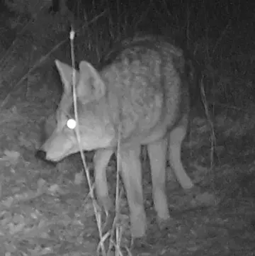
WILDLIFE / 001 ↗
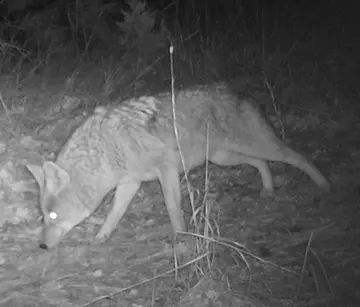
WILDLIFE / 002 ↗
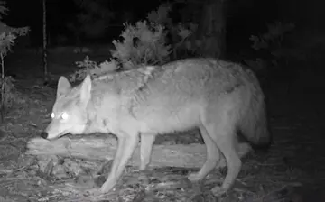
WILDLIFE / 003 ↗
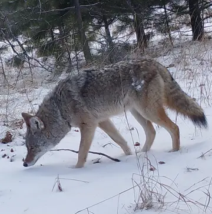
WILDLIFE / 004 ↗
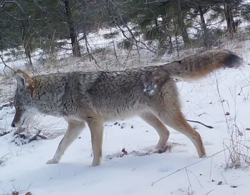
WILDLIFE / 005 ↗
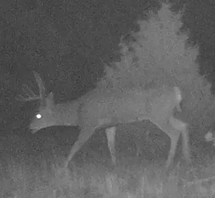
WILDLIFE / 006 ↗
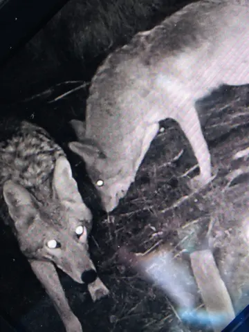
WILDLIFE / 007 ↗
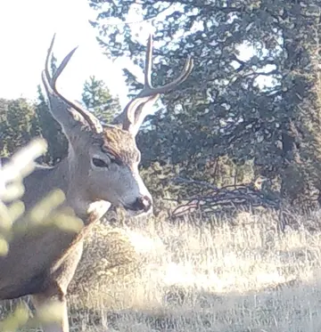
WILDLIFE / 008 ↗
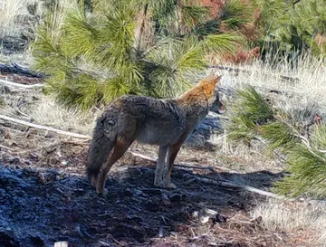
WILDLIFE / 009 ↗
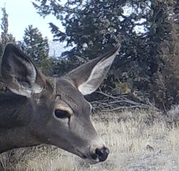
WILDLIFE / 010 ↗
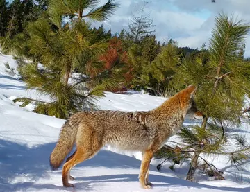
WILDLIFE / 011 ↗
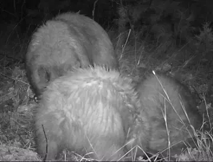
WILDLIFE / 012 ↗
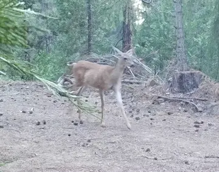
WILDLIFE / 013 ↗
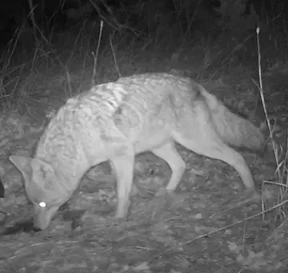
WILDLIFE / 014 ↗
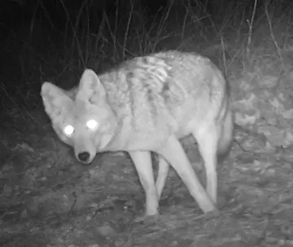
WILDLIFE / 015 ↗
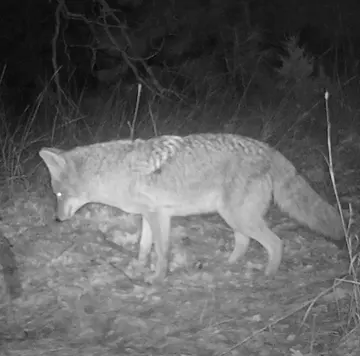
WILDLIFE / 016 ↗
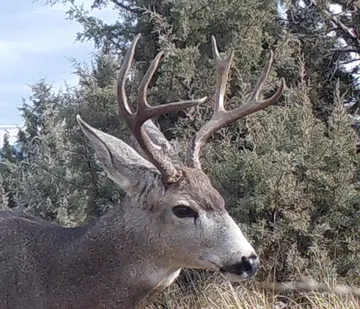
WILDLIFE / 017 ↗
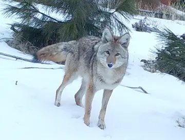
WILDLIFE / 018 ↗
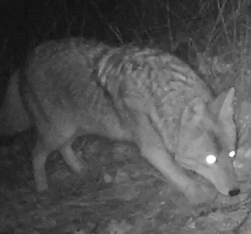
WILDLIFE / 019 ↗
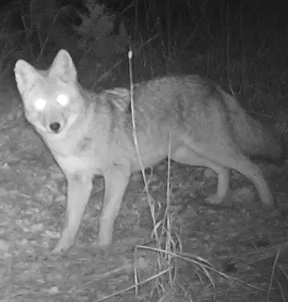
WILDLIFE / 020 ↗
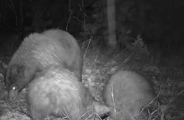
WILDLIFE / 021 ↗
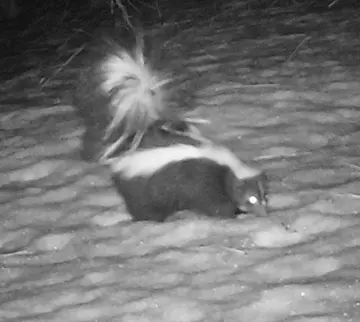
WILDLIFE / 022 ↗
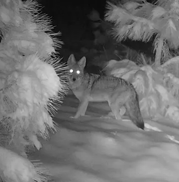
WILDLIFE / 023 ↗
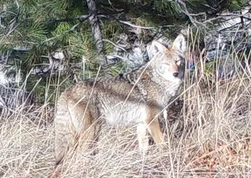
WILDLIFE / 024 ↗
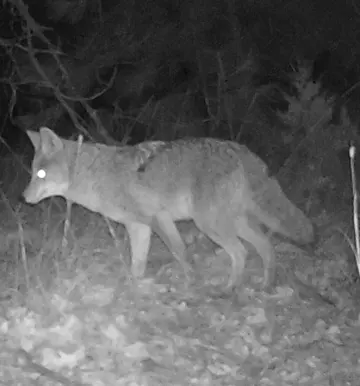
WILDLIFE / 025 ↗
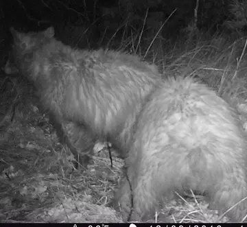
WILDLIFE / 026 ↗
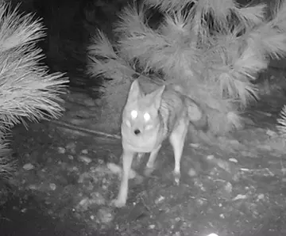
WILDLIFE / 027 ↗
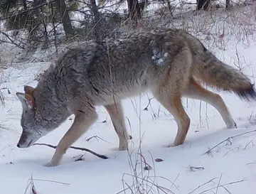
WILDLIFE / 028 ↗
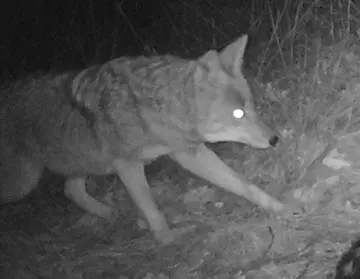
WILDLIFE / 029 ↗
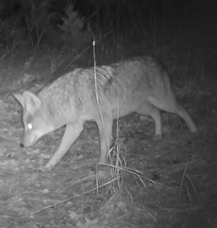
WILDLIFE / 030 ↗
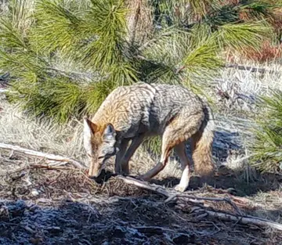
WILDLIFE / 031 ↗
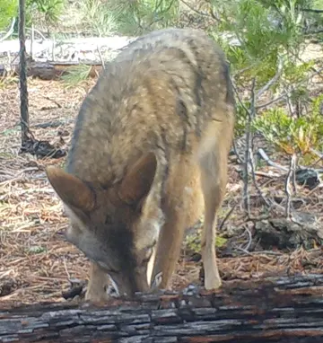
WILDLIFE / 032 ↗
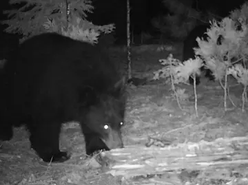
WILDLIFE / 033 ↗
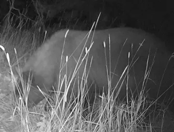
WILDLIFE / 034 ↗
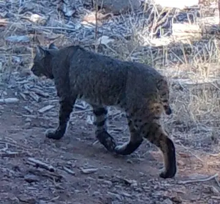
WILDLIFE / 035 ↗
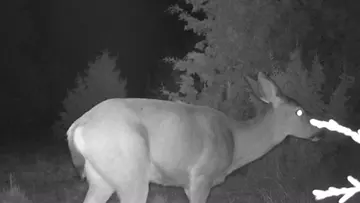
WILDLIFE / 036 ↗
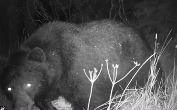
WILDLIFE / 037 ↗
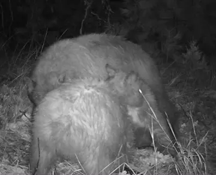
WILDLIFE / 038 ↗
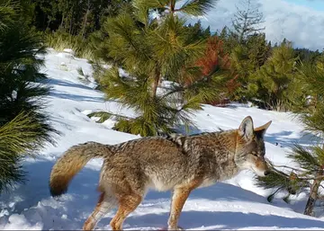
WILDLIFE / 039 ↗
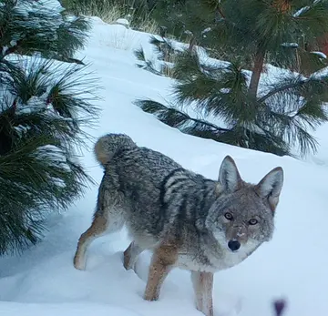
WILDLIFE / 040 ↗
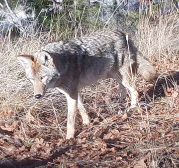
WILDLIFE / 041 ↗
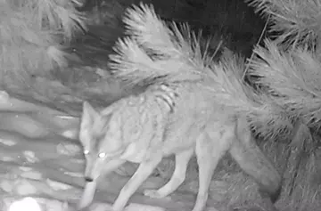
WILDLIFE / 042 ↗
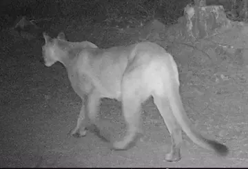
WILDLIFE / 043 ↗
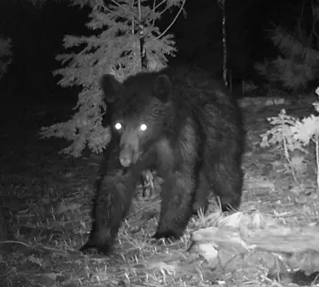
WILDLIFE / 044 ↗
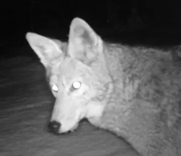
WILDLIFE / 045 ↗
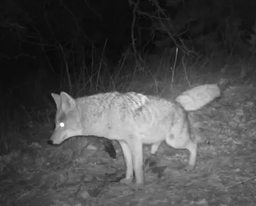
WILDLIFE / 046 ↗
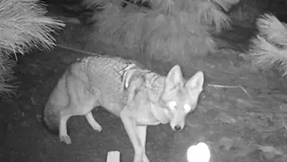
WILDLIFE / 047 ↗
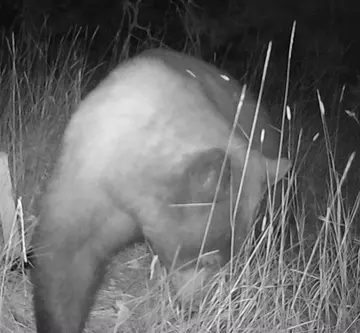
WILDLIFE / 048 ↗
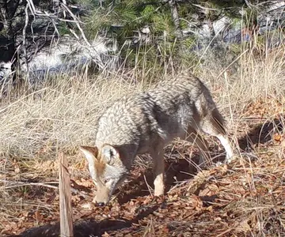
WILDLIFE / 049 ↗
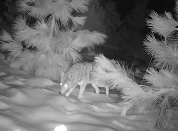
WILDLIFE / 050 ↗WILDLIFE / 051 ↗WILDLIFE / 052 ↗WILDLIFE / 053 ↗WILDLIFE / 054 ↗WILDLIFE / 055 ↗WILDLIFE / 056 ↗WILDLIFE / 057 ↗WILDLIFE / 058 ↗WILDLIFE / 059 ↗WILDLIFE / 060 ↗WILDLIFE / 061 ↗WILDLIFE / 062 ↗WILDLIFE / 063 ↗WILDLIFE / 064 ↗WILDLIFE / 065 ↗WILDLIFE / 066 ↗WILDLIFE / 067 ↗WILDLIFE / 068 ↗WILDLIFE / 069 ↗WILDLIFE / 070 ↗WILDLIFE / 071 ↗WILDLIFE / 072 ↗WILDLIFE / 073 ↗WILDLIFE / 074 ↗WILDLIFE / 075 ↗WILDLIFE / 076 ↗WILDLIFE / 077 ↗WILDLIFE / 078 ↗WILDLIFE / 079 ↗WILDLIFE / 080 ↗WILDLIFE / 081 ↗WILDLIFE / 082 ↗WILDLIFE / 083 ↗WILDLIFE / 084 ↗WILDLIFE / 085 ↗WILDLIFE / 086 ↗WILDLIFE / 087 ↗WILDLIFE / 088 ↗WILDLIFE / 089 ↗WILDLIFE / 090 ↗WILDLIFE / 091 ↗WILDLIFE / 092 ↗WILDLIFE / 093 ↗WILDLIFE / 094 ↗WILDLIFE / 095 ↗WILDLIFE / 096 ↗WILDLIFE / 097 ↗WILDLIFE / 098 ↗WILDLIFE / 099 ↗WILDLIFE / 100 ↗WILDLIFE / 101 ↗WILDLIFE / 102 ↗WILDLIFE / 103 ↗WILDLIFE / 104 ↗WILDLIFE / 105 ↗WILDLIFE / 106 ↗WILDLIFE / 107 ↗WILDLIFE / 108 ↗WILDLIFE / 109 ↗WILDLIFE / 110 ↗WILDLIFE / 111 ↗WILDLIFE / 112 ↗WILDLIFE / 113 ↗WILDLIFE / 114 ↗WILDLIFE / 115 ↗WILDLIFE / 116 ↗WILDLIFE / 117 ↗WILDLIFE / 118 ↗WILDLIFE / 119 ↗WILDLIFE / 120 ↗WILDLIFE / 121 ↗WILDLIFE / 122 ↗WILDLIFE / 123 ↗WILDLIFE / 124 ↗WILDLIFE / 125 ↗WILDLIFE / 126 ↗WILDLIFE / 127 ↗WILDLIFE / 128 ↗WILDLIFE / 129 ↗WILDLIFE / 130 ↗WILDLIFE / 131 ↗WILDLIFE / 132 ↗WILDLIFE / 133 ↗WILDLIFE / 134 ↗WILDLIFE / 135 ↗WILDLIFE / 136 ↗WILDLIFE / 137 ↗WILDLIFE / 138 ↗WILDLIFE / 139 ↗CATTLE / 001 ↗CATTLE / 002 ↗CATTLE / 003 ↗CATTLE / 004 ↗CATTLE / 005 ↗CATTLE / 006 ↗CATTLE / 007 ↗CATTLE / 008 ↗CATTLE / 009 ↗CATTLE / 010 ↗CATTLE / 011 ↗CATTLE / 012 ↗CATTLE / 013 ↗CATTLE / 014 ↗CATTLE / 015 ↗CATTLE / 016 ↗CATTLE / 017 ↗CATTLE / 018 ↗CATTLE / 019 ↗CATTLE / 020 ↗CATTLE / 021 ↗CATTLE / 022 ↗CATTLE / 023 ↗CATTLE / 024 ↗CATTLE / 025 ↗CATTLE / 026 ↗CATTLE / 027 ↗CATTLE / 028 ↗CATTLE / 029 ↗CATTLE / 030 ↗CATTLE / 031 ↗CATTLE / 032 ↗CATTLE / 033 ↗CATTLE / 034 ↗CATTLE / 035 ↗CATTLE / 036 ↗